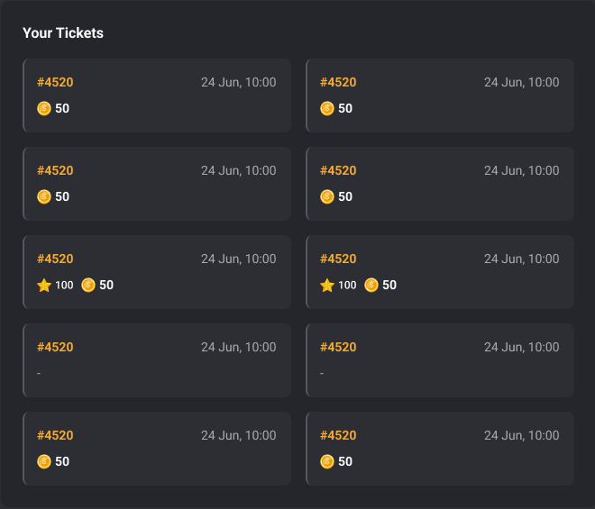
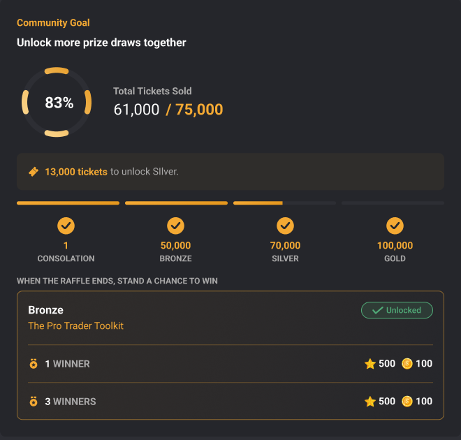

Participation / community goals / collaboration
One personal ticket.
A shared goal.
A raffle connects individual participation to a community-wide event: tickets, prize tiers, the current unlocked goal, the next threshold and the eventual draw.

Review and refinement: description consistency, goal-progress states, responsive behavior and acceptance criteria. Another designer led the feature.
Original Figma + archived review specifications
Participate → track tickets → unlock goals → await draw
My contribution
Making participation and progress easier to read.
My review focused on what the member could understand: consistent rich-text descriptions, truthful community-goal progress, the current tier by default and a clear preview of the next goal.
- Shared editing behavior
- The handoff calls for the shared Storybook RichTextEditor configuration used by Store, preserving formatting through to the member surface.
- Explicit goal states
- The review covered progressing and completed goals, current and next tiers, and the no-platform-reward state.
- Testable handoff
- The archived work includes five inline screenshots and eighteen acceptance criteria, with wide and 390px design-state checks.
Explore the product logic
Keep the current goal honest.
The local example demonstrates the progress states reviewed in the handoff. Ticket counts are synthetic; this does not buy tickets, select a winner or award a prize.
Current selection
Current goal in progress
600 of 1,000 example tickets. 400 remain before this goal unlocks.
Local illustration · synthetic examples · no account, reward or configuration changes.
Original design evidence
Participation and shared progress live together.
Feature flow
From an individual action to a collective milestone.
- 01
Inspect the event
See the prize, event timing and participation entry point.
- 02
Track personal tickets
The member can inspect their ticket inventory and standing.
- 03
Read shared progress
Current and future community goals make threshold progress explicit.
- 04
Await the event result
Participation is distinct from a win. The draw and any claim follow the configured event lifecycle.
Embed availability
The delivery surface has a clear boundary.
Raffles is not selected in the saved CatTrader Mini Games widget. The page uses the original Figma event frame and a local goal-state walkthrough; no unrelated widget is presented as a raffle.
The working feature / staging evidence
Personal entries and collective progress need separate evidence.
The original Figma details make the ticket record and community goal readable at a larger scale. CatTrader currently has no configured raffle event visible in its game inventory, so a staging event is not substituted or invented.


Evidence and limits
Read the artifacts at their actual strength.
Design intent and screen hierarchy.
The visible state at capture time.
Deterministic explanation of documented rules.
Source gaps and integration limits
No CatTrader Raffles embed is available in the saved selection. A current product capture and final release verification for the reviewed changes remain missing.
Feature walkthrough · updated 12 October 2026. Screens and source records are curated for explanation; no unverified adoption or business-impact claim is made.